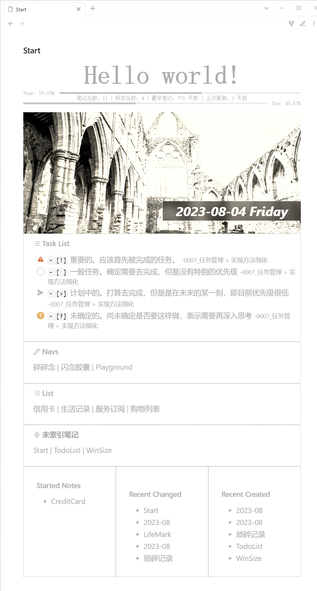

杂志起始页
效果图

说明
按照自己的使用习惯和需求制作的，未特别考虑通用性，不过已经添加详细注释，可以按需修改
我的一些观点——自由度
代码
参见 Dataview 的使用方法。
我尽可能按功能拆分了模块，为得是便于大家按需选用，便于任意排序，也便于讲解注意事项。你也可以把自己选用的模块都放在一个代码块中。
样式模块
包含了所有模块的样式，如果用不上，可以删除对应代码，不过保留对性能影响不大。此模块不显示任何内容，建议和其他模块共用一个代码段，比较便于编辑。
/* ==== 样式模块 ==== */
/* 为当前容器添加类，便于限定样式仅局部生效 */
dv.container.classList.add('Startpage-Main')
/* 注入模块样式 */
dv.container.innerHTML = `
<style>
/* ==== 全局样式 ==== */
/* 容器宽度限定，容器居中 */
.Startpage-Main,
.list-group {
max-width: 800px;
margin: 0 auto;
--main-color: #ACACAF;
}
/* ==== 标题模块 ==== */
/* 标题文字样式 */
.Startpage-Main h1 {
font-size: 4rem;
font-weight: 700;
font-family: serif;
color: #ACACAF;
margin: 0;
text-align: center;
}
/* ==== 进度模块 ==== */
/* 内容布局方案 */
.Startpage-Main .progress-area {
display: flex;
}
/* 文本样式 */
.Startpage-Main .progress-area .progress-text {
font-size: .8rem;
line-height: 1em;
height: 1em;
font-family: monospace;
color: #ACACAF;
padding-right: 1em;
}
.Startpage-Main .day-progress .progress-text {
padding-left: 1em;
padding-right: 0;
}
/* 左侧进度条（已度过） */
.Startpage-Main .progress-area .progress-pass {
height: calc(.4rem + 2px);
border-bottom: 4px double #ACACAF;
}
/* 右侧进度条（未度过） */
.Startpage-Main .progress-area .progress-will {
height: calc(.4rem + 2px);
border-bottom: 4px double rgba(172, 172, 175, .3);
}
/* ==== 笔记统计模块 ==== */
/* 内容文字样式 */
.NoteStatistics{
font-size: .8rem;
line-height: 1em;
height: 1em;
font-family: monospace;
color: #ACACAF;
text-align: center;
}
/* 当宽度不足，隐藏部分细节 */
@media screen and (max-width: 600px) {
.NoteStatistics span.hide-when-narrow {
display: none;
}
}
/* ==== 海报模块 ==== */
/* 图片容器 */
.post-area {
position: relative;
background-size: cover;
background-position: center;
/* 亮度、对比度、灰度、 饱和度、深褐色 */
filter: brightness(2) contrast(1.3) grayscale(.8) saturate(.6) sepia(.3);
height: 300px;
margin-top: 1rem;
}
/* 海报标题 */
.post-area .post-title {
position: absolute;
bottom: 2rem;
right: 0;
padding: 0 2rem;
font-size: 2rem;
font-weight: 700;
font-style: italic;
background: rgba(0, 0, 0, .6);
color: #DDDDE3;
backdrop-filter: blur(10px);
}
/* 标题段落（为了在窄屏幕下）正确的折行 */
.post-area .post-title>span {
display: inline-block;
}
/* ==== 笔记列表模块 ==== */
/* 内部整体容器，控制排列和上下边距 */
.list-group {
display: flex;
flex-wrap: wrap;
}
/* 单个笔记列表模块 */
.list-group .note-list {
border: 1px dashed #ACACAF;
color: #ACACAF;
padding: 1rem 2rem;
width: 33.33%;
}
/* 窄屏下并排数量 */
@media screen and (max-width: 799px) {
.list-group .note-list {
width: 50%;
}
}
@media screen and (max-width: 599px) {
.list-group .note-list {
width: 100%;
}
}
/* 链接颜色 */
.list-group a {
color: #ACACAF;
}
/* ==== 任务列表 ==== */
ul > li.task-list-item[data-task="x"], ul > li.task-list-item[data-task="X"] {
color: #CFCFCF;
}
/* ==== 笔记索引 ==== */
.callout {
max-width: 800px;
margin: 0 auto !important;
background: none;
border: 1px dashed #ACACAF;
}
.callout-icon .svg-icon,
.callout-title-inner,
.callout-title-inner a,
.callout-content,
.callout-content a {
color: #ACACAF;
}
.callout-content mark {
color: #ACACAF;
background-color: rgba(255, 225, 0, 0.1);;
}
/* 隐藏块之间的换行 */
.cm-line > br {
display: none;
}
</style>
`标题模块
/* ==== 标题模块 ==== */
/* 内容任意修改，没有使用 dv.header 方法是为了可以添加自定义类 */
dv.el('h1', 'Hello world!', {cls: 'Start-header'})年/日进度模块
示例图中与笔记统计模块相结合，结合方式为先按显示顺序书写添加元素代码：
/* ==== 元素插入 ==== */
/* 创建内容容器 */
const yearBar = dv.el('div', '', {cls: ['progress-area', 'year-progress']})
const NoteStatistics = dv.el('div', '', {cls: 'NoteStatistics'})
const dayBar = dv.el('div', '', {cls: ['progress-area', 'day-progress']})之后再书写各部分功能代码，这样就可以控制显示顺序了。当然这些代码要写在同一个代码段中。
之所以这样处理，是因为年进度和日进度相似代码很多，且都需要定时更新，所以合并到一起了。不太推荐拆分开，不过如果你只需要一个，可以删除另一个的 相关代码。
接续上方代码：
/* ==== 进度模块 ==== */
/* 进度更新函数 */
const changeProgress = ()=>{
/* 如果元素不存在则终止 */
if(!yearBar || !dayBar) return
/* 获取时间信息 */
const now = new Date()
const year = now.getFullYear()
const yearStart = new Date(year, 0)
const yearEnd = new Date(year+1, 0)
/* 计算年进度 */
const yearProgress = (now-yearStart)/(yearEnd-yearStart)
const yearPass = (yearProgress).toFixed(2)
/* 计算日进度 */
const dayProgress = (now%864e5-now.getTimezoneOffset()*6e4)/864e5
const dayPass = (dayProgress).toFixed(2)
/* 生成代码 */
yearBar.innerHTML = `
<div class="progress-text">Year: ${(yearProgress*100).toFixed(2)}% </div>
<div class="progress-pass" style="flex-grow: ${yearPass};"></div>
<div class="progress-will" style="flex-grow: ${1-yearPass};"></div>`
dayBar.innerHTML = `
<div class="progress-pass" style="flex-grow: ${dayPass};"></div>
<div class="progress-will" style="flex-grow: ${1-dayPass};"></div>
<div class="progress-text">Day: ${(dayProgress*100).toFixed(2)}% </div>`
/* 用以点击复制的分享文案 */
yearBar.dataset.content = `YearProgress: ${''.padEnd(Math.round(yearProgress / 0.05), '▓')}${''.padEnd(Math.round((1 - yearProgress) / 0.05), '░')} ${(yearProgress*100).toFixed(2)}%`
/* 定时进行下一次更新 */
setTimeout(changeProgress, 6e4)
}
changeProgress()
/* 年进度复制 */
yearBar.onclick = ()=>{
navigator.clipboard.writeText(yearBar.dataset.content)
}点击年进度条可以复制如下格式的内容：YearProgress: ▓▓▓▓▓▓▓▓▓▓▓▓░░░░░░░░ 59.02%，以便到处分享，制造焦虑。日进度条没有，我觉得用不上，如果你有需求，自行添加即可，简单模仿一下对应代码。
笔记统计模块
如果按照上方所述，已经提前添加了元素，则下面代码中添加元素部分应当删除。注意：必须放在同一个代码段中，才可以使用前面定义的变量。
此部分是将所有笔记按照需求过滤并统计，然后存入对应变量，所以也是笔记列表模块的前置。这里使用了一个全局变量 window.notes 存储结果，以便复用。所以在笔记列表模块之后最好用 delete window.notes 消除影响。
笔记时间统计使用的是 FrontMatter 中的 created 和 updated 字段，我觉得这样比较准确，有不同需求可以自行修改。
/* ==== 笔记统计模块 ==== */
/* 创建笔记统计元素 */
const NoteStatistics = dv.el('div', '', {cls: 'NoteStatistics'})
/** @type {number} 最近更新时间 */
let newestTime = 0
/** @type {number} 最早创建时间 */
let oldestTime = Date.now()
/* 笔记信息数组 */
window.notes = []
/* 遍历所有笔记 */
const pages = dv.pages().filter(e=>{
/**
* 判断文件类型和文件夹名称
* 如果不是 md 后缀的不算笔记
* 如果在 Resource 文件夹下的不算笔记
* 这里用了正则，但是很简单，比如你可以把 Resource 换成任何顶层文件夹的名称
*/
if(e.file.ext !== 'md' || /^(Resource|ZJI)/.test(e.file.folder)) {
return false
}
/** @type {number} 如果有更早的创建时间则存储 */
const createdTime = +new Date(e.file.frontmatter.created)
/** @type {number} 如果有更晚的创建时间则存储 */
const updatedTime = +new Date(e.file.frontmatter.updated)
if(createdTime<oldestTime) oldestTime = createdTime
if(updatedTime>newestTime) newestTime = updatedTime
/* 摘取必要信息存入笔记数组 */
window.notes.push({
name: e.file.name,
link: e.file.link,
tags: e.file.tags,
/* 关于时间，优先使用 FrontMatter 中的特定字段，如不存在，则使用系统数据（不准确，可能因同步等因素而被设定为错误的值） */
created: new Date(e.file?.frontmatter?.created || e.file?.ctime?.ts),
updated: new Date(e.file?.frontmatter?.updated || e.file?.mtime?.ts)
})
return true
})
/* 拼接代码输出 */
NoteStatistics.innerHTML = `笔记<span class="hide-when-narrow">总数</span>：${pages.length} |`
+`<span class="hide-when-narrow"> 标签总数：${dv.pages('').file.etags.distinct().length} |</span>`
+` 最早<span class="hide-when-narrow">笔记</span>：${Math.round((Date.now()-oldestTime)/864e5)} 天前 |`
+` 上次<span class="hide-when-narrow">更新</span>：${Math.round((Date.now()-newestTime)/864e5)} 天前`海报模块
海报中日期并不会实时更新，应该也没啥必要。当前图片源是每日更新。图片增加了滤镜，更符合这种旧杂志的风格，可以在样式模块中自行调整。
/* ==== 海报模块 ==== */
/* 创建元素 */
const topStory = dv.el('div', '', {cls: 'post-area'})
/* 获取星期几，觉得这里用英文好看一点 */
const dayName = ['Sunday', 'Monday', 'Tuesday', 'Wednesday', 'Thursday', 'Friday', 'Saturday'][new Date().getDay()]
/* 生成代码 */
/* 随机图片地址按需更换，我也没找到什么好用的，当前源是每日更新 */
topStory.style = `background-image: url('https://api.dujin.org/bing/1366.php?spam=${Date.now()}');`
topStory.innerHTML = `
<div class="post-title"><span>${dv.func.dateformat(dv.date('now'), 'yyyy-MM-dd')}</span> <span>${dayName}</span></div>
`任务列表模块
需要自行修改任务目录，或者将小括号留空（检索所有笔记）。具体任务标记请按照自己的需求进行修改。
/* ==== 任务列表模块 ==== */
/* 读取所有任务，限定目录可以减少查询，提高性能 */
const allTasks = dv.pages('"Work"').file.tasks
/* 今日完成的任务 */
const todayDone = allTasks.filter(t=>t.completed && t.completion.ts===dv.date('today').ts)
/**
* 输出任务列表组
*
* @param {string} title 列表标题（目前未使用，当注释了）
* @param {number} count 列表最大任务数量
* @param {array} taskList 经过排序/过滤的任务
*/
const TaskAddGroup = (title, count, taskList)=>{
return taskList.slice(0, count).map(t=>`> - [${t.status}] ${t.text} <small>-${t.link}</small>\n`).join('')
}
/* 创建代码变量 */
let TaskCode = `> [!example] Task List\n`
/* 待办事项 */
TaskCode += TaskAddGroup('Next', 5, allTasks.filter(t=>t.status==='!'))
TaskCode += TaskAddGroup('Todo', 5, allTasks.filter(t=>t.status===' '))
TaskCode += TaskAddGroup('Plan', 5, allTasks.filter(t=>t.status==='>'))
TaskCode += TaskAddGroup('Maybe', 5, allTasks.filter(t=>t.status==='?'))
TaskCode += todayDone.length ? `> ---\n` : ''
TaskCode += TaskAddGroup('Done', 5, todayDone)
dv.el('div', TaskCode)笔记列表模块
/* ==== 笔记列表模块 ==== */
/* 创建元素 */
const NoteList = dv.el('div', '', {cls: ['list-group', 'note-groups']})
/**
* 输出笔记列表组
*
* @param {string} title 列表标题
* @param {number} count 笔记数量
* @param {array} noteList 经过排序/过滤的笔记
*/
const noteAddGroup = (title, count, noteList)=>{
/* 拼接笔记列表代码 */
const listCode = noteList.slice(0, count).map(f=>`<li><a href="${f.link}">${f.name}</a></li>`).join('')
/* 套用模板输出 */
return `
<div class="note-list">
<h3>${title}</h3>
<ul>
${listCode}
</ul>
</div>`
}
/* 星标笔记（包含 #stared 标签） */
NoteList.innerHTML += noteAddGroup('Started Notes', 5, window.notes.filter(n=>n.tags.includes('#stared')))
/* 最近更新 */
NoteList.innerHTML += noteAddGroup('Recent Changed', 5, window.notes.toSorted((a, b)=> -(a.updated-b.updated)))
/* 最近创建 */
NoteList.innerHTML += noteAddGroup('Recent Created', 5, window.notes.toSorted((a, b)=> -(a.created-b.created)))
/* 删除全局变量 */
delete window.notes笔记索引模块
这部分比较简单，就是手写的 Callouts，其中有一些日期相关的内容，我用了 dataview 的 inline 查询：
>[!note] Navs
> `$= '[[Life/Logs/'+dv.func.dateformat(dv.func.date('today'), 'yyyy-MM')+'|碎碎念]]'` | `$= '[[Inbox/Idea/'+dv.func.dateformat(dv.func.date('today'), 'yyyy-MM')+'|闪念胶囊]]'` | [Playground](Inbox/Playground)未索引笔记模块
自行修改需排除的文件夹，索引文件（文件夹）位置，均为正则表达式。
/* 创建代码 */
const code = `> [!danger] 未索引笔记
> `
+ dv.pages().filter(p=>{
// 排除这些文件夹中的笔记
if(/^(ZJI|Resource|Life|Work|Inbox\/Idea)\//i.test(p.file.path)) return false
// 没有进入链接的文件
if(!p.file?.inlinks?.length) return true
// 进入链接都不来自于索引文件（夹）
let unIndex = true
p.file.inlinks.forEach(l=>{
if(/^Start/i.test(l.path)) unIndex = false
})
return unIndex
}).map(p=>p.file.link).join(' | ')
dv.el('div', code)